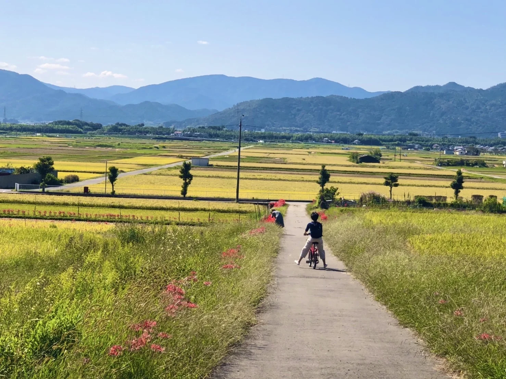
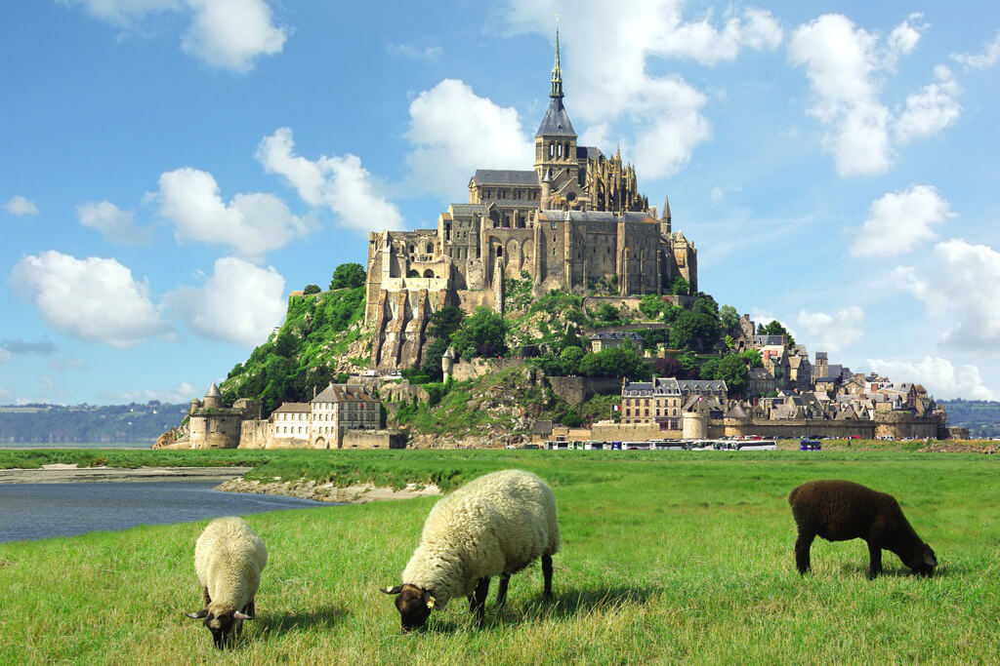
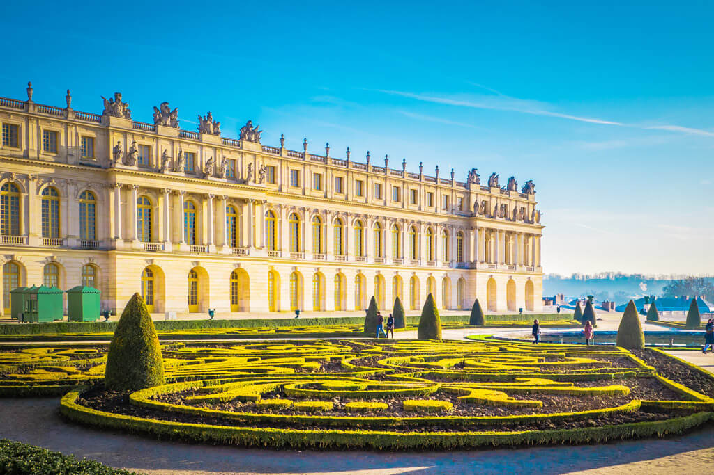

My dream vacations
Link to go back to main page
This page is about the possible vacation places I'd like to visit one day
Countries
Japan
Exploring the countryside and reconnecting with my grandma that lives there

Eating some of my favorite dishes, "Zaru Soba"
Italy
Similarly, I'd like to enjoy the quiet and peaceful countryside of italy as well

Of course I can't forget to visit the Colosseum of Rome

France
Mont-Saint Michel has an amazing view from outside

Versailles is also an iconic spot to visit

There are many more places I'd like to visit that comes to mind but these are the main ones I'd like to go to